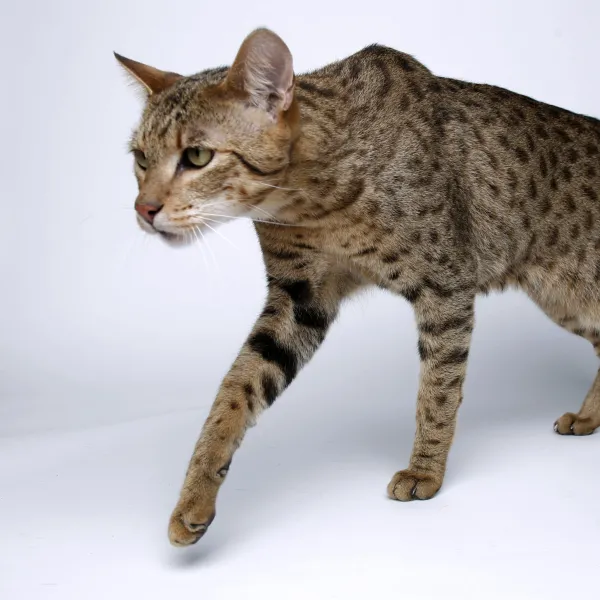

imagenes de gatos
En este completo listado encontrarás todas las razas de gatos con fotos y sus nombres para que puedas aprender más sobre ellas. Así, si estás pensando en adoptar un gato pero todavía no sabes cuál, descubre con nosotros las razas de gatos grandes, razas de gatos pequeños o razas de gatos sin pelo y encuentra a tu compañero ideal. Y si ya convives con un adorable felino, infórmate sobre todos sus cuidados, ya que aquí encontrarás la ficha de raza del gato persa, del gato siamés, del gato bengalí, del gato Maine coon, del gato angora, ¡y muchas razas más! Todas las razas de gatos y sus características te están esperando.
Pincha aqui para ver mas imagenes de gatos


Ashera
El gato ashera es sin duda un gato muy popular ya sea por su esbelta y hermosa figura, por el carácter tranquilo y silente o por el desorbitado precio de quienes le crearon. Efectivamente, el gato ashera es un felino desarrollado en un laboratorio estadounidense, un híbrido entre diversas especies.
Australian Mist

El australian mist o gato de la niebla es una raza desarrollada en Australia en 1976. Desciende del cruze entre diversas razas de gato incluidos los birmanos, los abisinios y otros gatos de pelo corto nacionales de Australia. El Dr. Truda Straede, creador, quería lograr un gato con todas las características de sus predecesores, eso sí, con un carácter simpático, activo y de buen humor.
British shorthair - Gato británico de pelo corto

El british shorthair, también conocido como gato británico de pelo corto, es considerada una de las razas más antiguas y populares de Gran Bretaña. ¿Estás pensando en adoptar a uno? ¿Quieres saber más sobre esta raza? En esta ficha de raza de ExpertoAnimal te mostraremos todo lo que necesitas saber del gato british shorthair, incluyendo características, carácter o todos los colores que son permitidos según el estándar, como el clásico "blue", blanco o el ahumado.
Gato abisinio

Todos los gatos comparten unas características conductuales capaces de fascinar a los amantes de los felinos, no obstante, el gato abisinio destila una gran elegancia y armonía y una de sus características más importantes es su carácter amable y juguetón, de hecho, se dice que este gato conserva siempre su carácter de cachorro y a pesar de que madure psíquica y fisiológicamente, exige constantemente atención y cariño y siempre muestra una insaciable curiosidad, rasgos que no podríamos encontrar en otros gatos, menos aún en su etapa